En el estado de Morelos, prácticamente la totalidad de las haciendas se dedicaron principalmente al cultivo de caña, producción de azúcar y productos afines.
Tal es el caso de la Hacienda San Antonio El Puente, misma que remonta sus orígenes como centro productor hacia finales de 1590 (siglo XVI), cuando se otorgan las primeras Mercedes Reales por parte de la Corona Española con la finalidad de explotar la tierra con cultivos de caña.
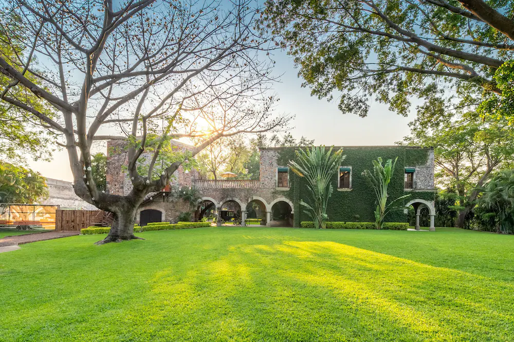
Así comienza esta larga historia y será a mediados del siglo XVIII (alrededor de 1750) cuando ya cuenta con una extensión considerable de más de 4000 hectáreas y el casco de la Hacienda se encuentra prácticamente consolidado como lo podemos apreciar hoy en día, con la magnificencia que caracteriza estos grandes centros productores de la región, con sus bóvedas de cañón, arcadas y demás elementos característicos del siglo XVI. Para estas fechas, cuenta con el cuarto de calderas, donde se procesa el jugo de caña, producto de la molienda, misma que en esta temprana época se procesa a base de una rueda hidráulica que más adelante sería sustituida por máquinas eléctricas o de vapor. Cuenta además con los purgares, los patios o asoleaderos, las torres, talleres de carpintería, caballerizas, la huerta y desde luego la casa principal, misma que además de la familia de los hacendados daba cabida al personal de confianza, tales como el administrador, mayordomos, nanas, el médico, el sacerdote, mozos, cocineras, etc., ya que los peones o jornaleros vivían en unos terrenos denominados “El Real” que se ubican a corta distancia, pero fuera del casco de la hacienda.
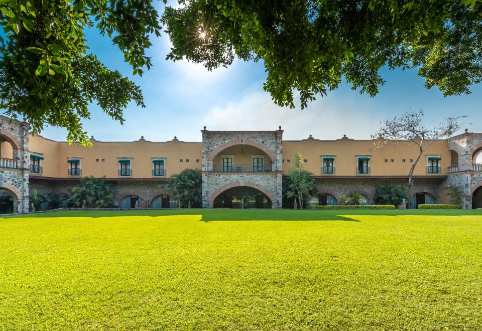
En la época porfirista (1876-1911), cuando estas haciendas llegaron a su esplendor, perteneció al Sr. Ramón Portillo y Gómez, quien fue uno de los hacendados con mayor conocimiento de todos los aspectos del riego, incluso escribió un libro que ayudó a muchos hacendados de su tiempo para mejorar las técnicas hidráulicas en sus cultivos. Para 1897, esta sería la primera hacienda en utilizar una turbina hidráulica con un generador de energía eléctrica, aprovechando la altura y el caudal que le proporciona su acueducto. Para esta época, también es junto con la Hacienda de Vista Hermosa, de las únicas que dejan de producir azúcar para iniciar la producción de alcohol de caña.
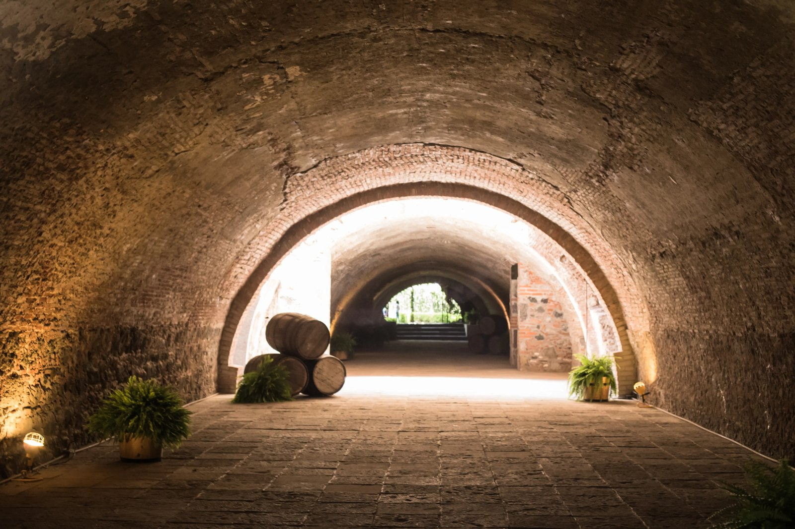
En los inicios del siglo XX, específicamente en 1910-1911, esta hacienda, como todas las del estado y de la república, son paralizadas en su producción por el movimiento Revolucionario, siendo expropiadas sus tierras.
Bajo estos techos, el 11 de abril de 1911, justo un día antes de la toma de la Ciudad de Cuernavaca, el General Asunción pernocta en la hacienda, con un contingente de más de 2000 hombres, para dirigirse al día siguiente a la entrega de las llaves de la ciudad al General Emiliano Zapata.
Posteriormente, lo que quedó de la Hacienda fue convertida en molino de arroz y para los años 1950-1955 fue transformada en balneario. Por estas fechas, se rodaron importantes filmes con personajes del cine nacional, como “Los Gavilanes” con Pedro Infante (filmada en 1954) y “El Ciclón” con Miguel Aceves Mejía.
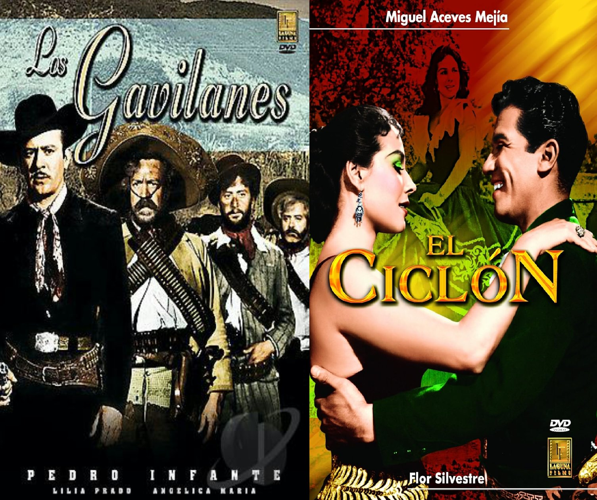
Actualmente, sus instalaciones han sido bellamente acondicionadas para albergar a un Hotel Categoría Especial, con todas las comodidades y tecnologías modernas para sus exigentes huéspedes, y es también un bello escenario donde se filman desde programas de televisión y telenovelas hasta concursos de belleza.
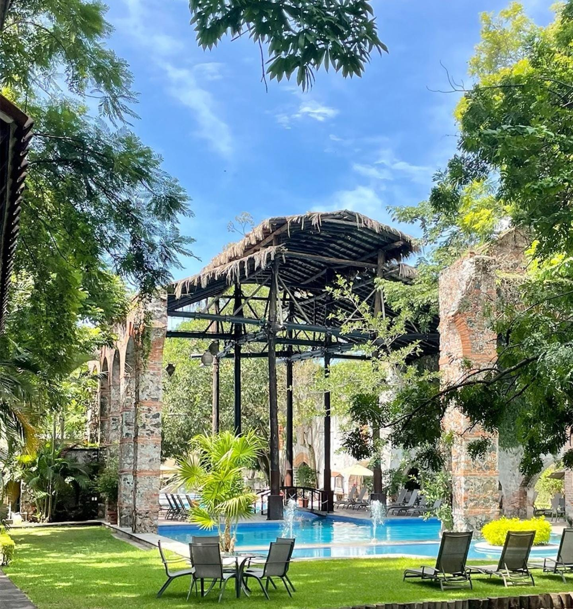
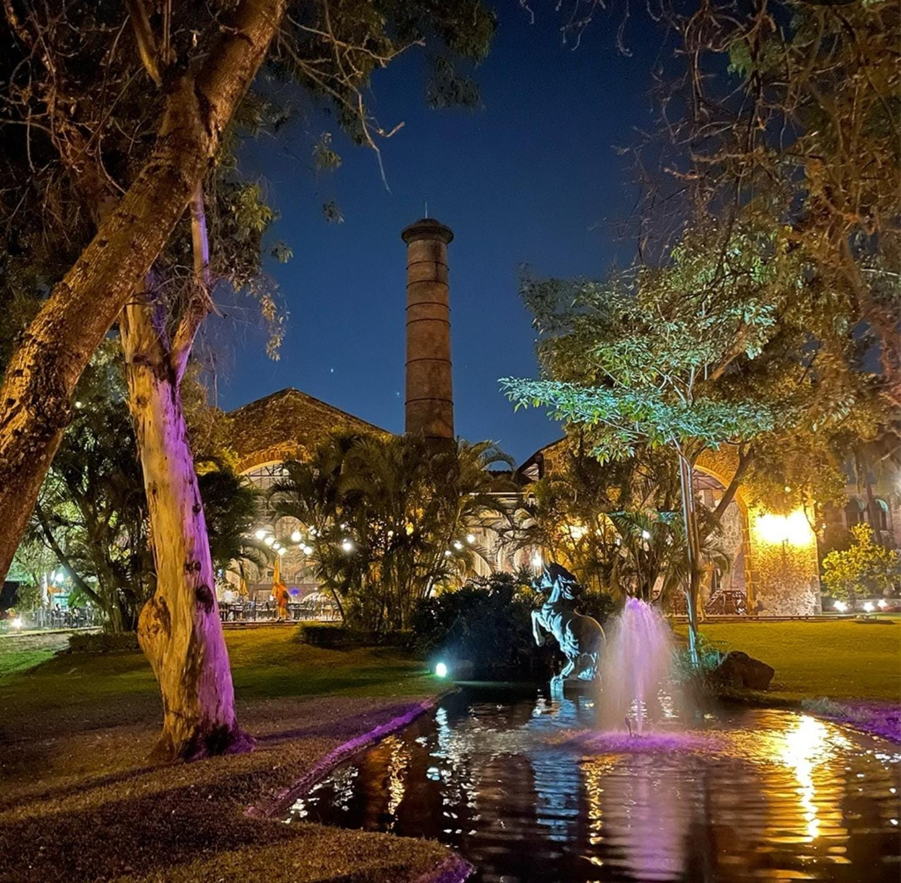
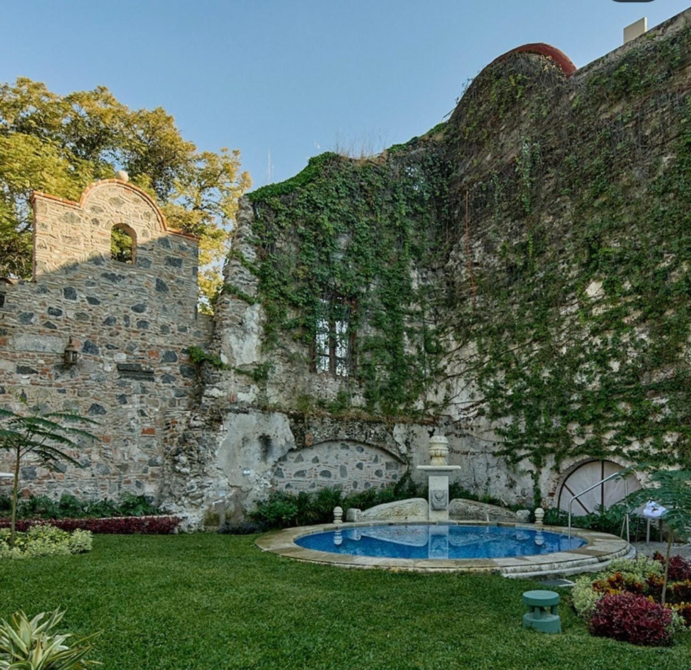
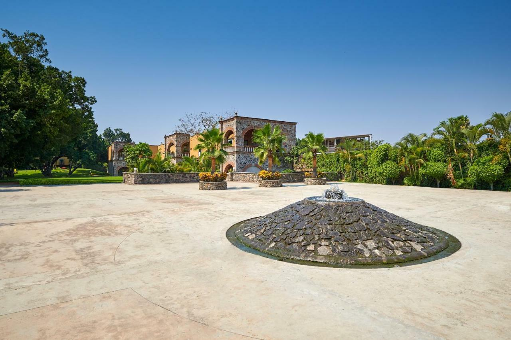
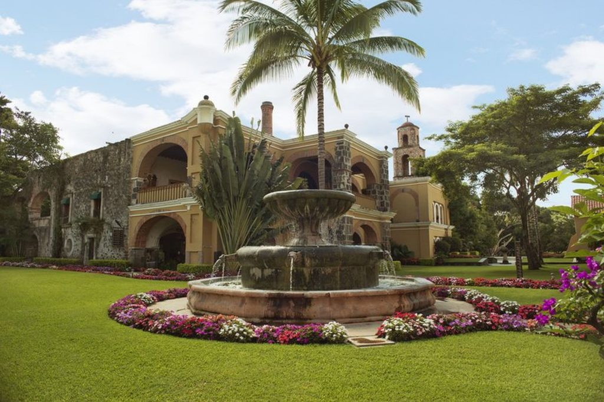
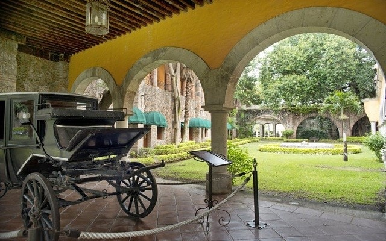
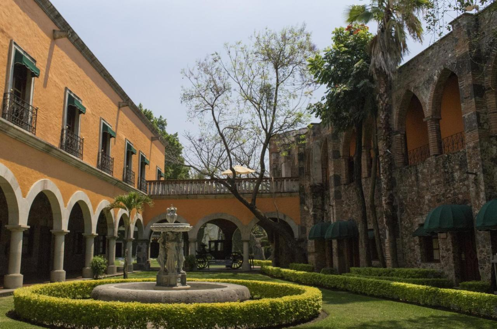
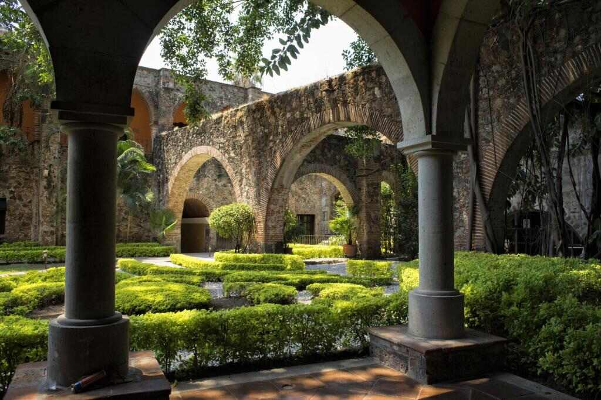
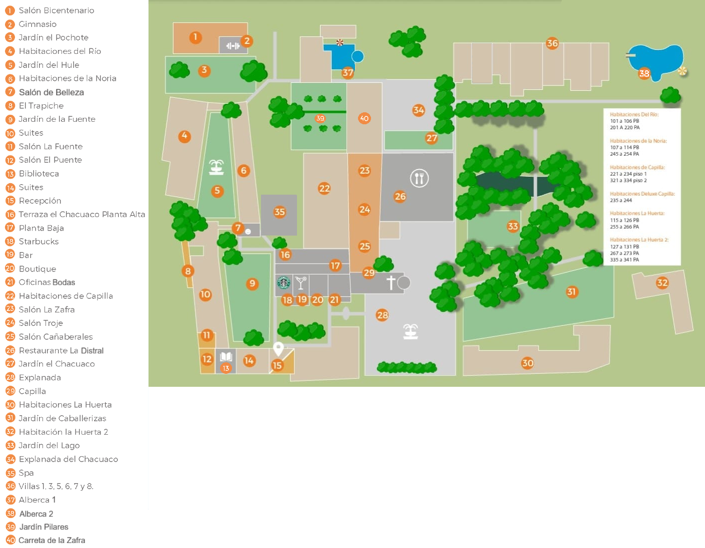